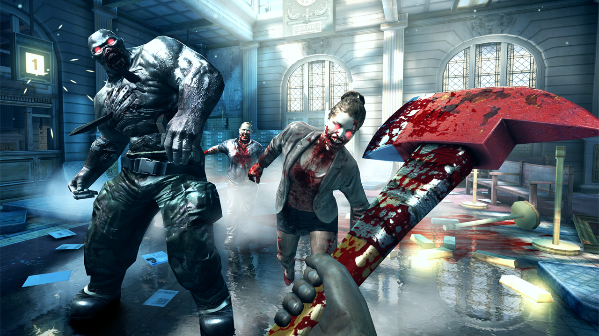

Dead Trigger2
Morto Trigger 2 é um zombie com tema primeira pessoa survival horror jogo de vídeo desenvolvido e publicado pela Madfinger Games . Foi lançado paradispositivos Android e iOS em 23 de outubro de 2013 e para o Facebook em 20 de fevereiro de 2014. [1] Como com o Dead Trigger original, o Dead Trigger 2 é umatirador de zombie comum único jogador . Nvidia apresentou Dead Trigger 2 como a primeira demo de tecnologia para o próximo sistema móvel Tegra 4 -on-a-chip; [2] [3] Slide to Play e Android Police compararam a qualidade gráfica com o Xbox 360 e a PlayStation 3 . [4]
Dead Trigger 2 utiliza o mecanismo do jogo Unity . Foi lançado como um jogo livre para jogar ; As microtransações estão incluídas no produto final, mas os desenvolvedores testaram o jogo sem compras no aplicativo para se certificar de que a jogabilidade do núcleo funciona sem eles.
Menu Inicial |